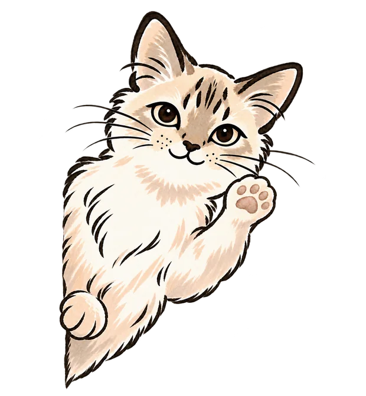
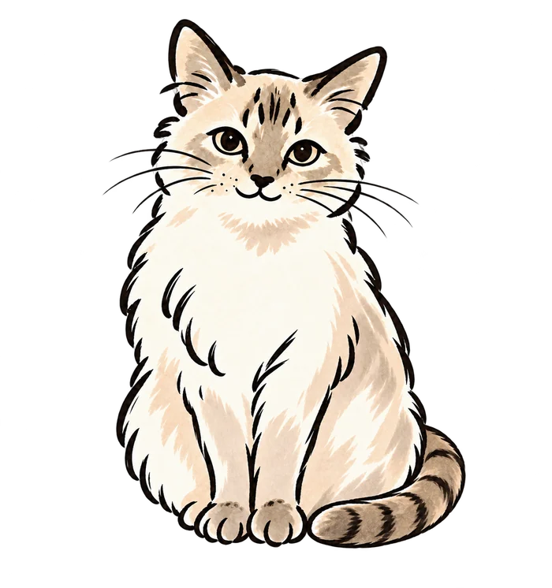
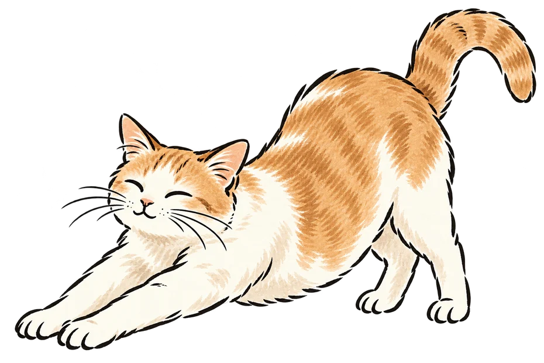
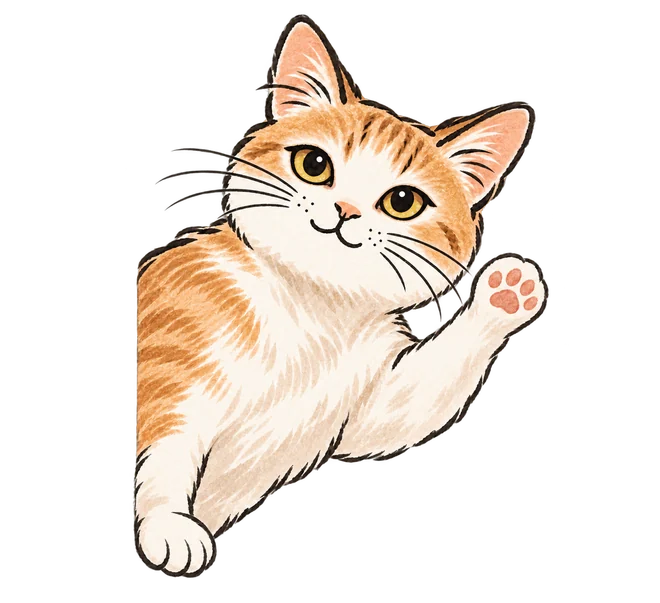
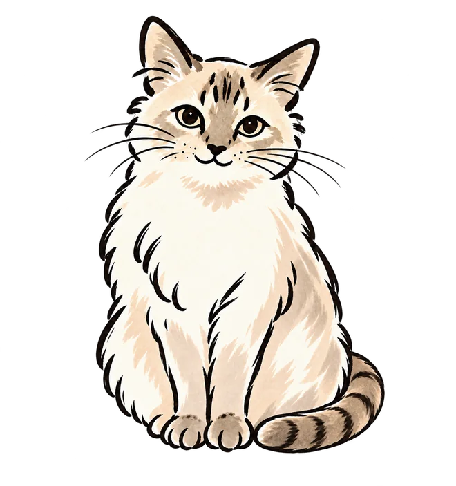

1 / 3
1 / 3Cases
案例分享
每一隻貓的狀況都不一樣。這裡整理我們到府照顧過的貓咪，點開卡片可以看更多照片與說明。（案例經飼主同意分享）

1 / 3
1 / 2
 1 / 31 / 2
1 / 31 / 2
1 / 2
高雄市左營區 · 吳小姐 · 咪咪
飼主週末外出兩天，我們每天到府一趟，確認飲水、飼料與貓砂，並陪牠玩一會兒。回報裡有牠當天的精神與食慾，飼主回來之後可以對照平常的狀況。

1 / 3
1 / 2
高雄市新興區 · 許小姐 · 雪球
連假期間預約的人很多，飼主提早一個月預約了免費家訪，確認每天抵達的時間。國定假日仍到府，費用依收費方式的加價項目計算。
 1 / 2
1 / 2找不到符合的案例，換個關鍵字或分類試試。
想了解您的貓咪該怎麼安排？
加入 LINE 告訴我們您的需求，我們一起安排一次免費家訪。